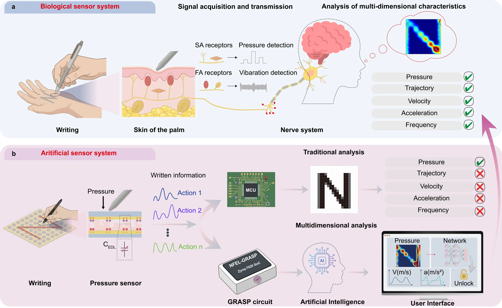
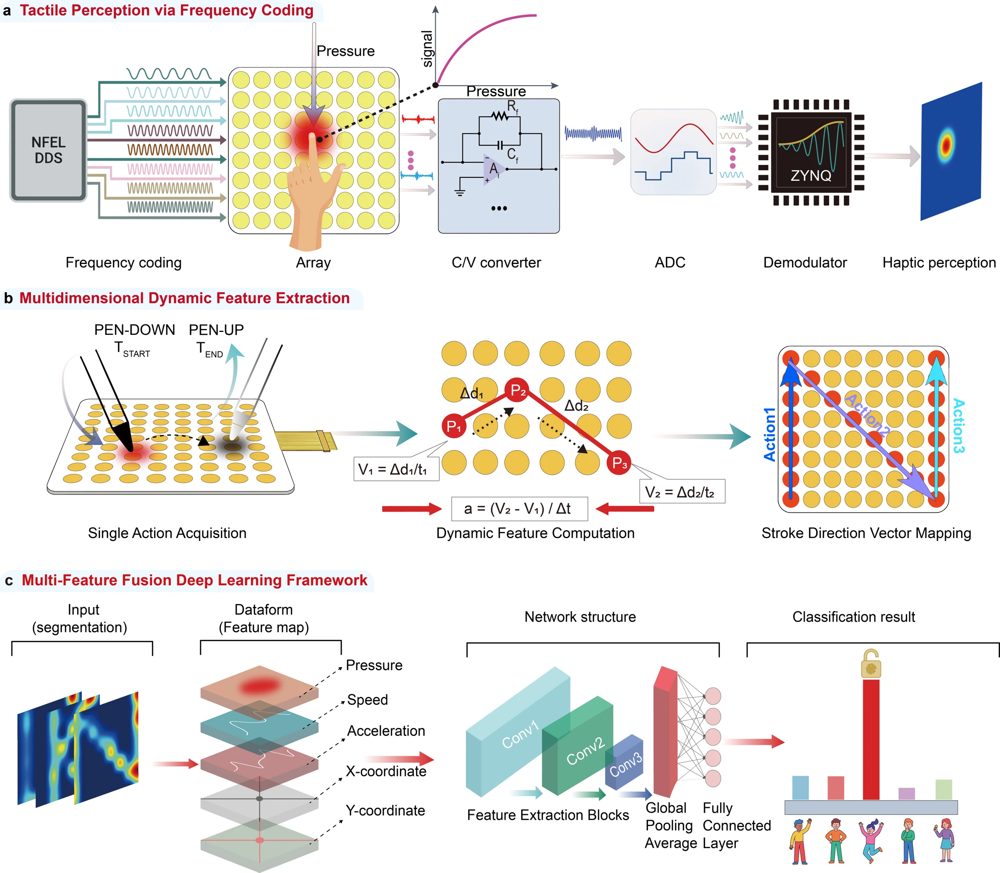
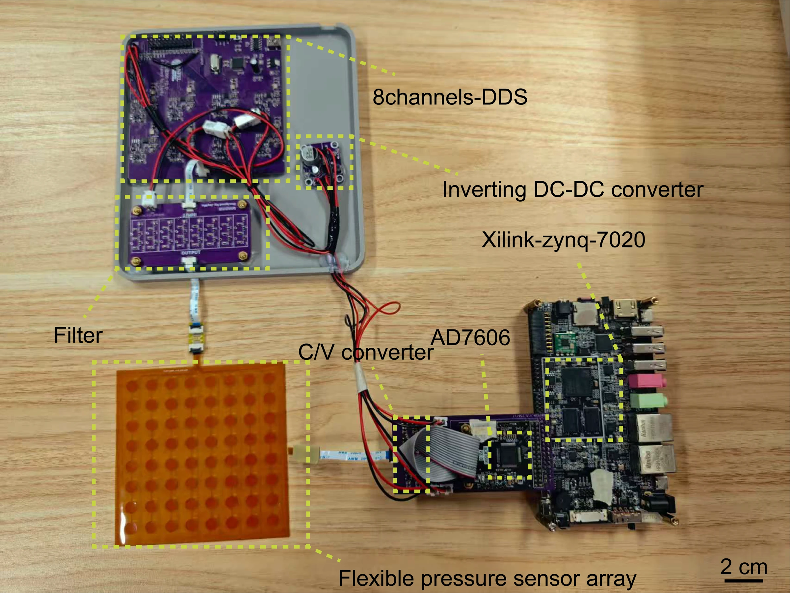
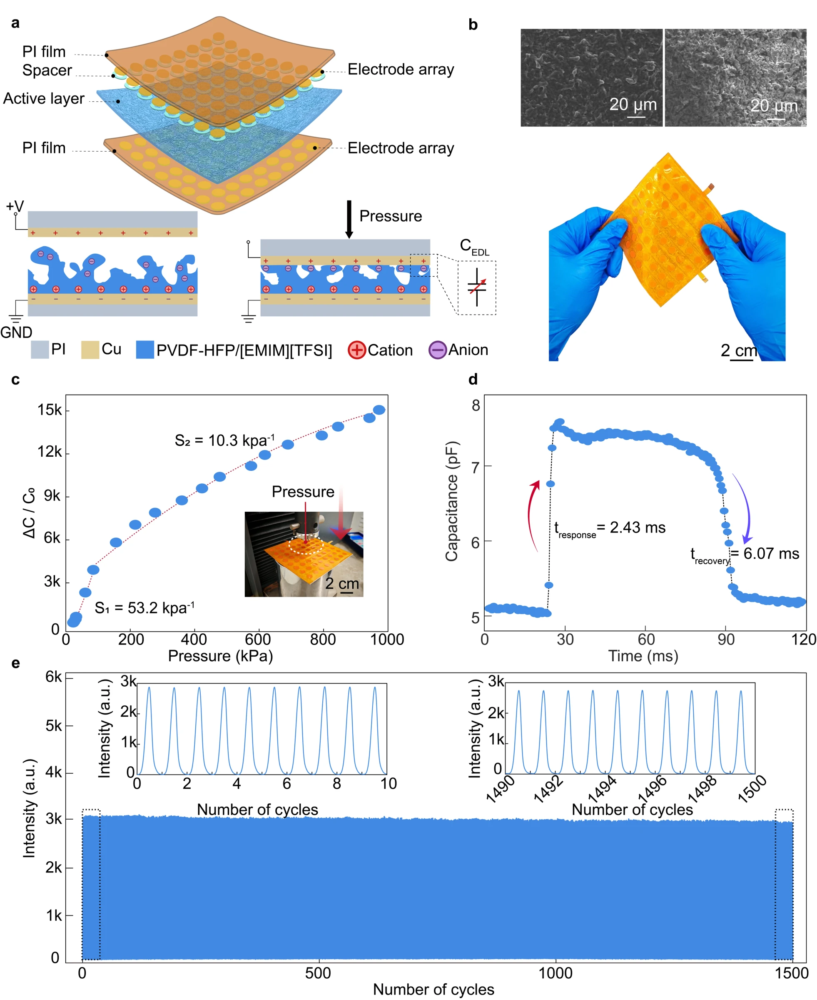
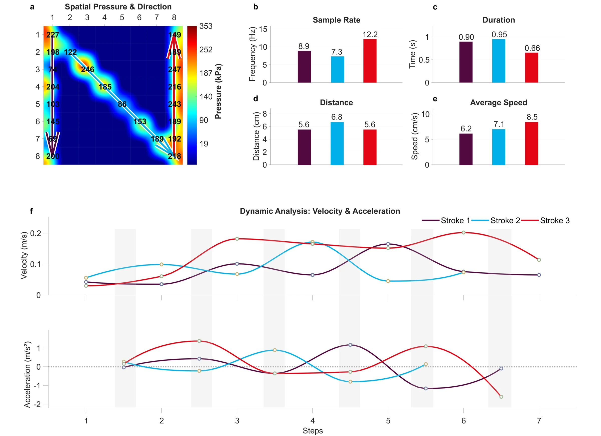
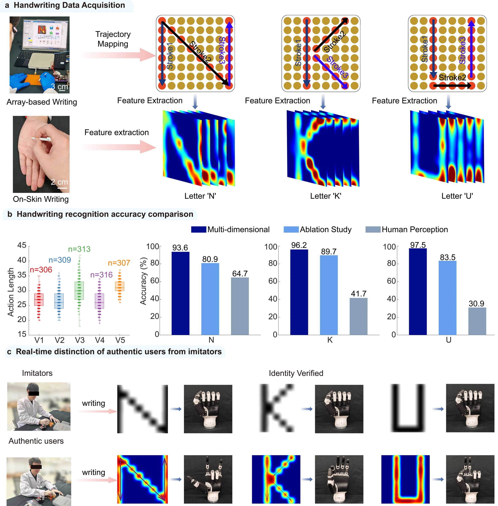
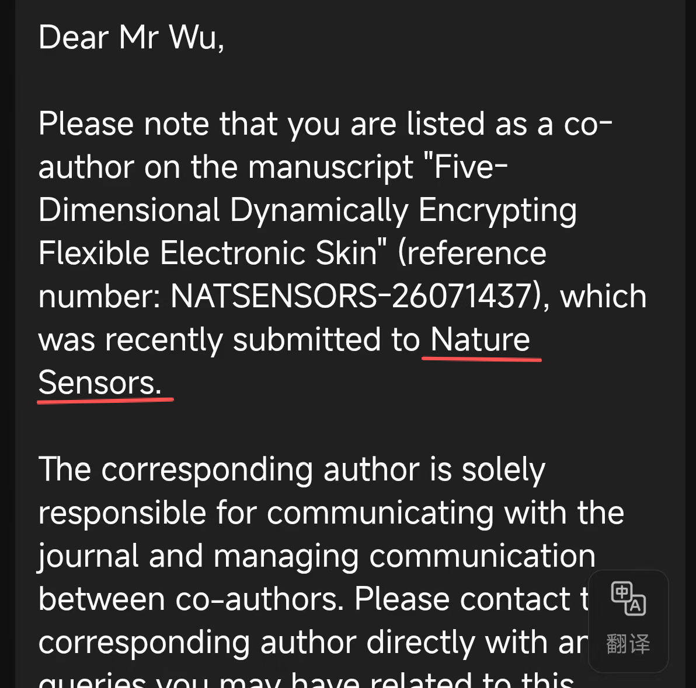

硬件：高速、多通道触觉采集
基于 Zynq-7020 研发 GRASP 采集系统，融合 PZPM 与频分复用（FDM）技术，针对高串扰与低采样率痛点建立触觉数据通道，采样率达到 2,000 Hz。
RESEARCH / SENSING & SYSTEMS
以 GRASP 高速采集系统连接柔性电子皮肤与手写运动学，从触觉信号中提取五维动态特征，探索行为生物识别。
01 / MOTIVATION
传统触觉阵列主要提供静态压力分布。但在手写过程中，即使写出相同字符，不同人的力度、轨迹和节奏也存在差异。研究希望从柔性电子皮肤的信号中恢复这些动态特征，用于行为生物识别。
系统需要同时解决阵列串扰、采样速度和运动信息解耦问题：只有稳定地记录细微变化，后续识别模型才能利用书写行为，而不只是最终留下的压力图。

02 / GRASP SYSTEM
基于 Zynq-7020 研发 GRASP 采集系统，融合 PZPM 与频分复用（FDM）技术，针对高串扰与低采样率痛点建立触觉数据通道，采样率达到 2,000 Hz。
论文稿描述了静态基线校准、自适应笔画分割与离散运动学解耦。将原始信号转换为压力及运动特征，形成可用于行为分析的时空表征。



03 / MY CONTRIBUTION
负责采集系统相关的嵌入式开发，连接硬件数据获取与后续处理流程。
负责电路板设计及结构建模，将传感与采集需求落实为可运行的实物系统。
负责从书写轨迹与触觉信号中提取多维手写特征，打通触觉数据采集和行为表征。
构建多维手写数据集，训练身份识别模型，并通过消融实验检验动态特征的作用。
贡献范围按个人简历描述。论文稿将 Jie Wu 列为第一顺位作者，并标注共同贡献。
04 / RESULTS
简历报告系统响应时间为 2.63 ms。通过多维特征建模与消融验证，研究表明：书写过程中蕴含的运动信息可以帮助区分不同用户。
本页个人成果摘要按简历展示。文件夹中的 Manuscript_WJ_V14 报告响应时间为 2.43 ms，并分别报告字符 N、K、U 的识别率为 93.6%、96.2%、97.5%。这些数值与简历中的 2.63 ms、97.8% 存在差异，不能视为同一版本的同一统计结果。
稿件第 19 页描述五名志愿者、1,551 个样本及 70% / 30% 随机训练测试划分。仅用压力特征时，N、K、U 识别率分别为 80.9%、89.7%、83.5%；这些对比对应稿件实验设置。


05 / DEMONSTRATIONS
06 / SUBMISSION
投稿确认邮件记录了稿件提交和作者通知，不代表录用或发表。

依据：个人简历研究内容、Nature Sensors 文件夹中的正文与研究图、用户提供的投稿通知。完整论文草稿未作为公开下载附件。